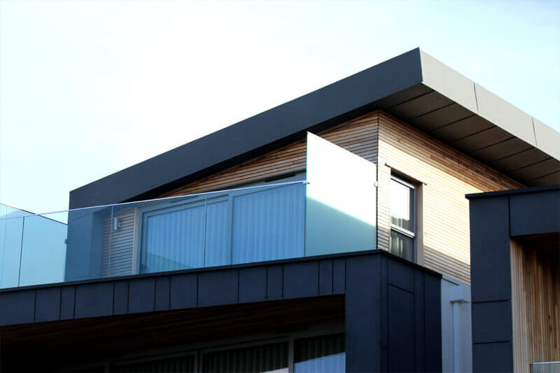

01 / FURNITURE↗
RESTORE.
家具翻新
布艺更换、坐垫更新、木质饰面与结构修复，让熟悉的家具重新焕发质感。

A DIFFERENT PERSPECTIVE
留住你喜爱的，改变你期待的。
从家具的触感，到家的整体氛围。
布艺更换、坐垫更新、木质饰面与结构修复，让熟悉的家具重新焕发质感。
从布局、配色与材质，到家具搭配，让空间贴近你的生活方式。
让家具与空间一起被重新考虑，以完整的设计，为家开启新的篇章。
自然的材质，温暖的光线。
每个空间，都有属于自己的表达。
SCROLL TO EXPLORE · 点击图片查看细节 ↗
从你的想法出发，
一步一步，让焕新有迹可循。
准备家具或空间照片、尺寸，以及你喜欢的风格。
结合材质、现场条件与预算，讨论适合的设计与工艺。
确认范围与时间安排，让计划逐步成为真实的日常。
请准备家具的整体照片、局部损坏照片、尺寸，以及你希望达到的效果，方便评估适合的翻新方向。
可以将原有家具、空间布局、色彩与材料一同考虑，让翻新后的家具自然融入新的空间。
需要根据家具的实际状况、材料选择与施工范围进一步评估。请先整理需求，再确认具体方案。
从你已经拥有的美好出发。
一起，探索下一种可能。